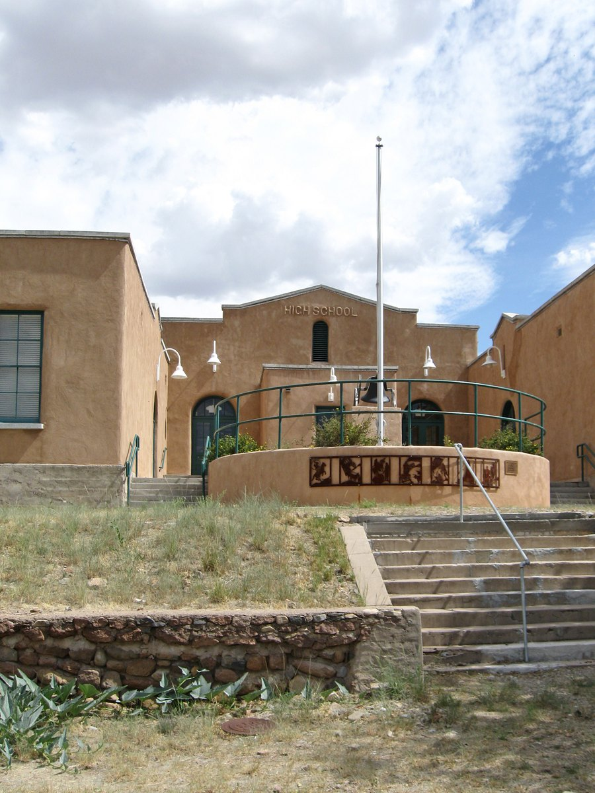

Thursday, November 12, 2026 · T or C · Elephant Butte · Hillsboro · Arrey · Sierra County
Hey neighbors. Here's week two of Hot Springs Weekly. It's free, it takes about five minutes, and it's all about what's going on right here in Sierra County. This week: the Tigers in the football quarterfinals and at state volleyball, a second screwworm case in the county, a meeting on the Cantrell Dam project, a full Saturday downtown with Art Hop, and a thank-you to our veterans.
Heads up: Hot Springs Weekly's publisher, Brenden Anglin, works for the City of T or C. Our city coverage sticks to public records, with no opinions.
Around town
Tips & Toes: Veronica finished cosmetology school and is now taking appointments at Tips & Toes, Monday through Wednesday and Saturday, 9 a.m. to 4 p.m. (her post in Sierra County NM Square)
Thrift or Consequences posted its "last day open" in the Sierra County NM Square group last week. Thanks for the bargains, neighbors.
Fresh produce Thursday: YourFreshestFood, a small family produce-basket business, drops off at Hot Springs Mercantile, 902 N. Date St., today, Thursday, just after noon. Orders for this run closed Wednesday. Their next T or C run is Thursday, Dec 10, which also stops in Caballo. Mixed baskets run about $30 to $33, with add-ons like local raw milk, honey, beans and cheese. yourfreshestfood.com · Kara, 970-261-7450
Shepherd's Closet food pantry at Church at the Butte on Butte Blvd. in Elephant Butte, is open Tuesdays from 1:30 to 6:30 p.m. The next one is Tuesday, Nov 17. They also take donations of non-perishable food. Church at the Butte
T or C City Commission
Water shutoff and road closure today: the city's WSPI-1 water work around Silver and 9th means a water service disruption and a road closure today, Thursday, Nov 12, from 10:30 a.m. to 2 p.m. Work started Wednesday at 5 p.m. City alerts
Cantrell Dam meeting, Thursday, Nov 19, 4:30 to 5:30 p.m., Albert Lyon Event Center, 2953 S. Broadway. The city is holding a public kickoff meeting on the planned breach of Cantrell Dam and downstream drainage work. Questions: talvarez@torcnm.gov or (575) 952-0565. City notice
Tree planting Saturday, Nov 14, 9 a.m. to noon, T or C Municipal Golf Course, 685 Marie St. The city's calendar lists a Tree or C volunteer event to plant 60 trees. City event
Updates: the City Commission meets Wednesday, Nov 18 at 9 a.m., 405 W. Third St.; as of Wednesday evening, Nov 11, the agenda and the Oct 28 minutes still weren't posted (agendas). Mosquito spraying runs through Saturday, Nov 14, and the shooting range is closed Nov 21, 8 a.m. to 3 p.m. (city alerts). The new garbage truck order is delayed to a 2028 build and costs about $5,000 more (city news, Nov 3).
Elephant Butte City Council
No new agenda or minutes from the Oct 28 council meeting were posted as of Wednesday evening, Nov 11. Agendas and minutes
Public hearings still set for Wednesday, Nov 18 at 2 p.m. at City Hall, 103 Water Ave.: Ordinance 231 would adopt the 2021 International Fire Code with New Mexico amendments, and Ordinance 232 sets out prohibited fireworks acts and penalties. Neither is final yet. Ordinance 231 notice · Ordinance 232 notice
City offices closed Thursday and Friday, Nov 26 and 27, for Thanksgiving. City November calendar
Williamsburg
We did not find a new Village of Williamsburg agenda, minutes or public notice since last issue.
The city's Cantrell Dam drainage project, with its kickoff meeting Nov 19 (see T or C above), is meant in part to reduce flooding risk for Williamsburg property owners.
Sierra County Commission
New World screwworm, now two cases: the county said Wednesday that Sierra County has two confirmed cases, one in a horse and one in a dog. Moving animals within an infested zone needs no extra paperwork. Moving them from an infested zone to a non-infested zone needs a New Mexico Livestock Board Form 1 and a current Certificate of Movement, both done within 5 days of the move, plus proof of treatment with ivermectin or Dectomax products. Out-of-state moves also need a Certificate of Veterinary Inspection, and Colorado entry is taking extra time. Samples can be dropped off at the county Extension office. Suspect a case? Call your vet or the Livestock Board at (505) 841-6161 (after hours, 1-800-525-2782). County notice · ScrewwormNM.org
Election results certified: the commission met in special session Tuesday, Nov 10, to canvass the 2026 general election. Meeting agenda · From the Sierra County Sentinel: County Certifies Election Results
Off-highway vehicles on state roads, comments due Monday: written comments on proposed recreational off-highway vehicle access on portions of NM 51, 179, 181 and 195 are due Monday, Nov 16, by 5 p.m., delivered or emailed to the County Manager. The commission's next regular meeting is Tuesday, Nov 17 at 10 a.m., 1712 N. Date St.; as of Wednesday evening, Nov 11, that agenda wasn't posted yet. County post · County agendas
Free Dump Day, this Friday and Saturday, Nov 13 and 14, 8:30 a.m. to 4 p.m.: Winston, Hillsboro and Arrey transfer stations take household trash, construction debris and recyclables free. No tires. (Sierra County flyer)
Schools
New IT director: T or C Municipal Schools named Chris Soiles director of information technology. He has run the district's network for about 10 years. TCMSD news
Cookies for a Cause: bring a non-perishable food item to any T or C school cafeteria and get a fresh-baked cookie. Everything collected goes to a local food bank. The drive runs through Thursday, Dec 17. TCMSD
Thanksgiving lunch at T or C Elementary and Sierra Elementary Complex, Wednesday, Nov 18. Tickets are $5 and must be bought by Monday, Nov 16. Lunch times by grade: K 10:30, 1st 10:55, 2nd 11:20, 3rd 11:45, 4th 12:10, 5th 12:35. TCMSD
Parent University: the state's free event for families of students with disabilities comes to NMSU's Corbett Center in Las Cruces, Fri Nov 20 (4 to 7:30 p.m.) and Sat Nov 21 (8 to 4), with meals and childcare. TCMSD · Details
Tigers football: No. 10 Hot Springs beat No. 7 West Las Vegas 34-7 on Saturday, Nov 7, in the first round of the 3A state playoffs. Quarterback Zaiden Baker ran for three touchdowns and threw for another, and Billy Baca had three interceptions. Next is a quarterfinal rematch at No. 2 Hope Christian on Saturday, Nov 14. Hope Christian beat the Tigers 55-19 in the regular season. Kickoff is 11 a.m. at Wilson Stadium in Albuquerque. Tickets are sold only online through GoFan: $12 for adults, $8 for seniors 65 and up and military. Midnight Horizons Sports, Nov 8 · Tickets
Volleyball
Tiger volleyball (20-3, 6-0 in district) is the No. 2 seed in Class 3A with a first-round bye. They play today, Thursday, Nov 12, at 2 p.m. at the Rio Rancho Event Center, court 4, against the winner of this morning's 8 a.m. match between No. 7 Navajo Prep and No. 10 Cottonwood Classical Prep. The tournament runs through Saturday. Day passes are $17; single sessions are $12 for adults and $8 for students, seniors 65 and up and military, through GoFan. NMAA volleyball
Report it
Spot a problem around T or C? Here's who to call.
Water leak, water or sewer problem: call the Daupler line at (575) 223-1930, or the Water Office at (575) 894-7331.
Outage alerts: call the Water Department to update your phone number so Daupler can reach you. (Water Watch)
Out at the Spaceport
Spaceport America hasn't posted new news since Boeing's Ultra Low-Cost Seeker test on Sept 4. Virgin Galactic reports its third-quarter results after the markets close today, Thursday, Nov 12. If it says something new about testing, we'll pass it along next week. Virgin Galactic earnings date
Tours: Saturdays at 9 a.m. from the Geronimo Trail Visitor Center, 523 N. Broadway (be there by 8:40); back around 1. $49.99 for adults, minimum 7 people. Book here
Watching a launch: launches aren't open to the public. We'll pass along dates when they're announced.
5 jobs hiring this week
Five openings around the county. Pay is listed only where the posting shows it.
Emergency Management Coordinator/Wildland Fire Coordinator, Sierra County, T or C. $52,214 to $71,978. Details · how to apply
Uncertified Deputy, Sierra County Sheriff's Department, T or C. Details · how to apply
Executive Assistant, Sierra County Manager's Office, T or C. Details · how to apply
Chief Procurement Officer, Sierra County Administration, T or C. Details · how to apply
Walk-In Clinic Nurse Practitioner (full time), Sierra Vista Hospital, T or C. Email your application and resume to hr@svhnm.org. Details
Hiring? Send us your opening and we'll consider it for next week.
Lake levels and fishing
Elephant Butte ramps: State Parks says the Marina del Sur main ramp and Rock Canyon ramp are open, and four-wheel drive is no longer required. South Monticello and the Cliffs Area are still closed. Watch for submerged debris; launching is at your own risk. Day use 6 a.m. to 9 p.m. Park: 575-744-5923. (State Parks alerts, updated Nov 6)
Elephant Butte level: 4,313.27 feet, holding 202,175 acre-feet, nearly 10 percent full, on Tuesday, Nov 10 (provisional). That's up more than 6 1/2 feet from the Nov 3 reading we used last week. (Bureau of Reclamation)
Long Point closed for the winter: State Parks closed the Long Point area on Nov 9 because of vandalism, illegal dumping and hunting outside designated areas. It's set to reopen March 1, 2027. (State Parks alerts)
Caballo: 4,139.17 feet, 26,180 acre-feet, on Nov 10 (provisional). West ramp open, east ramp closed. Park: 575-743-3942. (Bureau of Reclamation · State Parks alerts)
Fishing: The bite is on.
Weather, burn rules and roads
Weather around T or C: sunny today, high near 69. Friday is mostly sunny, high near 68, with a 20 percent chance of showers and thunderstorms after 1 p.m., and a 20 percent chance of showers Friday night before 11 p.m. Saturday is mostly sunny but windy, high near 65, with gusts as high as 29 mph, so hold onto your Art Hop tent. Sunday is sunny, high near 64. Lows in the 40s. (NWS forecast)
Burn rules: the Gila National Forest doesn't list a forest-wide fire restriction. (Gila NF alerts)
T or C closures: Silver and 9th today, 10:30 a.m. to 2 p.m., with water service disruption; a lane closure around Kopra and Golf Club Drive; and Main St. from Clancy to McAdoo, plus McAdoo from Clancy to Daniels. (City alerts)
I-25 through Sierra County: NMDOT is rehabilitating the interstate from mile marker 75.5 to 85, between Williamsburg and Elephant Butte, with lane closures in both directions as needed. A 13-foot width restriction is also in place on that stretch and just south of Williamsburg, from mile marker 70.9 to 74.4. (NMDOT project page · construction restrictions as of Nov 4)
Other state roads: no current official closures turned up this week for NM 51, NM 152, NM 187, NM 195 or US 180. For the latest on I-25 and other highways, check NMRoads.com.
This weekend
Last week you told us you want more places to shop and hang out. Here's what's actually on the calendar, including downtown shops, galleries and an evening Art Hop.
Second Saturday Art Hop, Sat Nov 14, 6 to 9 p.m., free, downtown along Main and Broadway. Highlights include RioBravoFineArt's annual Fiber Art Show opening with Donna Monroe's wall pieces, new work by Lindsay D'Amour Williams at Snakestone Studios, 324 N. Broadway, and quilted Christmas pieces by Anne Dimit-Buckley at Angel Remnants. Before it, from 5 to 8 p.m., Healthy Families Sierra County serves soup for a suggested donation at 400 N. Broadway, raising money for holiday groceries for local families. MainStreet Art Hop page
Two craft fairs Saturday: the Geronimo Springs Museum Craft Fair, 211 Main St., Sat 9 to 4 and Sun noon to 3, free (details); and the SJOA Fall Craft Fair, 9 to 3 at the Ken James Senior Center, 360 W. Fourth St., with a $10 hamburger plate (details).
Friday and Sunday: Albuquerque's Mineral Hill Band brings its "Human Country Funk" to T or C Brewing, 410 N. Broadway, Fri Nov 13 at 6 p.m., free (details). On Sunday, Nov 15 at 1 p.m., Stories.SierraCountyNM opens its new storytelling season at the historic El Cortez Theatre, 415 Main St. (Sentinel post)
Also Saturday: the T or C Desert Ultra starts at 7 a.m. from Rotary Park, 450 W. Riverside, with a 10K, half marathon and 50K (details). The GFWC Hot Springs Woman's Club 4th Annual Veterans Day Car Show runs 9 to 3 at the Albert Lyon Event Center, 2953 S. Broadway. Spectators get in free, with judging at 11 a.m., awards at 2 p.m., an American Legion Auxiliary Unit 44 bake sale, food and swap meet vendors. Vehicle entry is $30 pre-buy or $35 on site, and all proceeds go to veteran causes in Sierra County. (details).
In Hillsboro Saturday: the Farm Market runs 9 to 2 across from the Black Range Museum, and at 10 a.m. the Historical Society stages a play about a day in 1890s Hillsboro in the museum courtyard. Market · Play
Coming up later (not this weekend)
Mon Nov 16: MainStreet Business Breakfast, 8 a.m., enter at 308 S. Pershing (details).
Sat Nov 28:Small Business Saturday. Spend $20 or more at any Sierra County small business to enter MainStreet's gift-card raffle (raffle details), then the 400 Block End-of-Year Block Party runs 5 to 10 p.m. on Broadway (details).
Fri Dec 11: MainStreet's Parade of Lights downtown, with lineup at 5:30 p.m. and the parade at 6:30 (MainStreet post).
Sat Dec 19: The Arrey Light Parade. According to organizer Tony Martin, entries meet at 4:30 p.m. on Aguirre Road at mile marker 14.65, the drivers' meeting is at 5, and the parade rolls at 5:30, ending at Bar M Diamond Arena at mile marker 18.5, in front of Caballo Tavern. Entry is free, with complimentary food and drinks (organizer's post). Wreaths Across America comes to Vista Memory Gardens the same day (see the Sentinel headline above).
Gas prices around town
These are current pump numbers, not a news story.
T or C, regular: $3.70 a gallon at Love's, 224 Dr Hubble Rd (I-25 exit 79), as of Wednesday, Nov 11. (Love's)
Diesel: $5.84 at Love's as of Wednesday, Nov 11.
Statewide: AAA puts New Mexico's average for regular at $3.79, down from $4.02 a week ago. (AAA New Mexico averages)
Police and sheriff blotter
T or C Police, October 2026 by the numbers. These are the department's own monthly stats, posted on its Facebook page.
1,033 calls for service in all, including 633 general calls for service, 146 animal control calls, 28 motor vehicle accidents, 46 follow-ups and 12 code calls
0 drunk or impaired driving cases
154 traffic stops
53 citations and warnings
14 arrests
Officers also trained in October on basic police work, low-light forensic photography, domestic violence response and instructor development, and the department took part in National Take Back and local trunk-or-treats.
The Sierra County Sheriff's Office, which also covers Elephant Butte and Williamsburg, hasn't posted arrest news or monthly numbers we could find. That's a gap in the records, not a claim that nothing happened.
County emergency alerts: text SIERRACO to 80946.
Lost, found and looking for a home
SCARS posted about a found dog near the gym on Broadway. Check their page for the latest details and photos. SCARS on Facebook
Adoptable pet of the week: Homer. He's a German Shepherd mix puppy at Desert Haven Animal Rescue (Sierra County Humane Society) in Williamsburg, about 6 months old and 30 pounds. They describe him as playful and sweet, already walking on a leash and sitting when asked. He's neutered, microchipped, up to date on shots, and good with dogs, cats and kids. Adoption fee: $75. Desert Haven, 15576 NM-187, Williamsburg · (575) 740-0643 · Homer's page
Lost or found a pet? Reply and we'll run it free.
Free help for local families
We give these spots away free to local folks who help kids and families. Nobody paid to be here.
Healthy Families Sierra County. Free, voluntary home visits from pregnancy through the early years, plus help finding food, housing or health care. This Saturday they're also serving soup during Art Hop. 400 N. Broadway, T or C · (575) 223-2585 · info@hfsierracounty.com
The Olive Tree. Free mental health and substance-use help for Sierra County residents of all ages, including people without insurance, plus creative arts and wellness classes and support for people coming out of incarceration. 808 Fir St., T or C · (575) 208-4045 · olivetreenm.org
Little Things Matter (AppleTree Educational Center). Free home visits from pregnancy up to age 3, with help on development, car seats and breastfeeding, plus a dads' group. English and Spanish. (575) 894-5646
Aprendamos Early Intervention. Worried your baby or toddler is behind on talking or walking? Free help for kids from birth to 3, mostly at home. (575) 526-6682 · info@aitkids.com
T or C Schools Family Resource Center. Short on supplies, clothes or other basics for your T or C students? Start here. (575) 894-8166
Matthew 25 Food Pantry. Free groceries every Thursday, 9 to 11 a.m., at 405 Austin St. No ID needed. torcmatthew25foodpantry@gmail.com
Neighbors of the Week
This week, our Neighbors of the Week are every veteran who served, and especially those who call Sierra County home. Veterans Day was Wednesday, Nov 11, and it's a good reminder that the safety we all enjoy here was made possible by people who were willing to sacrifice everything for it. To every one of you who served, and to the families who stood beside you: thank you. We're proud to be your neighbors.
Know somebody who quietly makes this place better? The guy who fixes everybody's swamp cooler, the lady who feeds the strays, the coach who never misses a practice? Reply with their name and why. We'll feature them here.
Photo of the Week
Send us your best shot from around the county: sunsets over the Butte, the river, the Caballos, your dog at the hot springs. Real photos only, from you. We'll credit you by name. Reply with the photo and where you took it.
You Decide, Sierra County
Last week's question was: what's the one thing you wish we had around here so you didn't have to drive to Las Cruces or Albuquerque for it?
Here's how 16 neighbors voted: a place to eat or hang out late at night got 7 votes, and more shopping, like clothes, hardware or electronics, also got 7. Things for kids and teens to do got 2. So it's a tie between late-night hangouts and more shopping.
This week's question: when you have a free Saturday here, what do you wish there was more of?
Tap your answer above, then hit Submit vote. No sign-up needed. We'll share the results next week. If you add your name, you agree we can print it with the results.
Entrepreneur Spotlight
Got a business or an idea you're building in Sierra County? We'll feature one local entrepreneur a week: what you do, why you started, and what you need. It's $15 per issue, and the first few are free. You'll get a signed agreement that your idea stays yours. Call or text 575-740-3555.
Sierra County Treasure Hunt
Last week we asked where in Sierra County that photo was. It's the Hillsboro Community Center, the old Hillsboro High School, on Elenora Street and First Street in Hillsboro. It also houses the Hillsboro Community Library. Congratulations to Kristin and Gina, who guessed it right! Nice work, you two.

Here's the original photo, by AllenS, public domain, via Wikimedia Commons.
This week's hunt: where in Sierra County is this? We cropped it tight to make you work for it.
Type your guess above and send it, no sign-up needed. We'll reveal the answer next week and print the names of everyone who got it right. Down the road, local businesses may sponsor prizes. Photo: National Archives and Records Administration (Miller Photography Studio), public domain, via Wikimedia Commons. We'll link the original next week so it doesn't give the answer away.
Above the Hot Springs
What's up in our sky, Nov 12 to 19.
Moon: a thin waxing crescent to start the week; first quarter is Tuesday, Nov 17 at 4:48 a.m. our time. (U.S. Naval Observatory)
Sunset in T or C: 5:09 p.m. Thursday, Nov 12, and 5:05 p.m. by Thursday, Nov 19. (U.S. Naval Observatory)
Planets: Saturn is the bright one after sunset in the east-southeast. Before sunrise, look for bright Venus low in the east-southeast and Jupiter and reddish Mars higher up, about 1.2 degrees apart on Nov 15 and 16. (When the Curves Line Up, NASA)
Best nights to look up: the early mornings of Tuesday, Nov 17, and Wednesday, Nov 18, after the moon sets, for the Leonid meteors, up to around 15 an hour under dark skies. The Northern Taurids also peak around Nov 12, with fewer meteors but bright fireballs. (NASA, American Meteor Society)
Did you know?
Angora goats helped build early Sierra County. Territorial-era records describe Henry J. Brown switching his ranch a mile below Kingston from cattle to Angora goats in 1896, and a Lake Valley rancher named Latham who grew a herd of 67 goats into about 1,200 Angoras between 1887 and 1900. (AHGP: Henry J. Brown, AHGP: Latham)
Sponsor Hot Springs Weekly
Want your business in front of your neighbors every week? Founding sponsors get the first 2 months free, then $25 a month, locked in. Call or text 575-740-3555.
Got a tip, an event or a correction? Just reply. · Forward this to a neighbor, or they can subscribe free at hotspringsweekly.beehiiv.com/subscribe · Hot Springs Weekly is an independent newsletter by BRA Holding Co LLC, Truth or Consequences, NM.